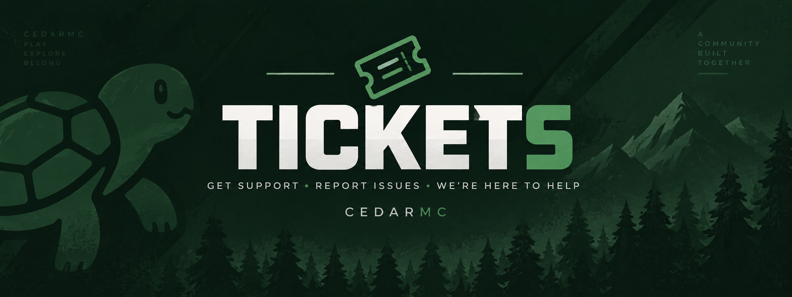

CEDARMC SURVIVAL
Your next survival story starts here.
A feature-rich Minecraft survival server built around progression, community, custom systems, and things worth working toward.
Java + Bedrock
Jobs & Fishing
Pets & Cosmetics
CEDARMC NETWORK
ONLINE
SURVIVAL REIMAGINED
CedarMC
Jobs • Pets • Fishing • Teams
SERVER ADDRESS
CedarMc.org
PLATFORM
Java + Bedrock
SERVER FEATURES
More than plain survival.
CedarMC keeps the core survival experience familiar while adding progression systems, rewards, cosmetics, teams, fishing, and quality-of-life features.
PROGRESSION
Jobs & Custom Fishing
Choose a job, level it up, catch better fish, and sell what you earn through custom markets.
COSMETICS
Pets
Unlock collectible pets that follow you around without getting in the way of building.
SOCIAL
Teams
Create a team, play together, share progression, and build your name across the server.
REWARDS
Ranks & Kits
Unlock rank perks, kit access, cosmetics, and benefits designed to make progression feel worthwhile.
AND MORE
Built around the full survival experience
Player shops, custom RTP, crates, events, leaderboards, voice chat, and ongoing updates keep things moving.
CEDARMC APP
One bot for the whole community.
CedarMc APP handles support tickets, applications, giveaways, reaction roles, suggestions, server status, and more inside Discord.
Open Discord
CEDARMC APP
READY TO PLAY?
Join CedarMC today.
Use the server address below in Minecraft and start your survival journey.